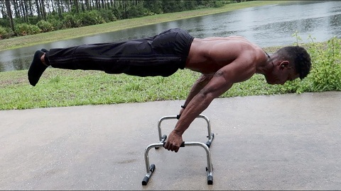

The Essential Equipments you should Have Before You Begin Calisthenics:
1. Parallettes
Parallettes are small gymnastics devices, employed in pairs, used primarily to simulate the parallel bars that can be found in professional gymnasiums. Parallettes are similar to pushup bars, or dip bars, but they are generally longer and lower to the ground. Aside from their appeal as equipment for gymnasts, parallettes are also appropriate for other athletes who wish to develop strength by means of bodyweight exercises. Typical exercises done on parallettes include L-sits, V-sits, handstand presses and handstand pushups. Body weight is always supported on the hands, but some parallette exercises are excellent core and leg strengtheners as well. Although parallettes can be purchased from a number of commercial sources, they are simple to fabricate from commonly available materials such as PVC pipe. Consequently, both professional and home gyms will often utilize low-cost, "homemade" parallettes.
2. Gymnastic Rings

People don’t usually consider gymnastic rings an essential equipment for calisthenics. Mostly because it’s a lot harder to do a simple pull-up in a ring, than it is in a bar. The freedom of movement of the rings means that your muscles have to compensate for instability in all directions during training. Thus, it’s a lot harder to use, but you get an additional training effect compared to training with dumbbells or with a bar.It brings a lot more variety into your workouts and helps you target muscles that you never targeted before, giving you that extra burn and muscle growth.
3.Pull/dip Bar

A pull-up bar is an essential piece of calisthenics equipment for doing pull-ups. As we have covered in a recent article, doing pull-ups can be a great way for building strength in a number of muscles such as your lats, pecs and biceps. One of the important features of a pull-up bar is its overall stability. Since you will be using your whole bodyweight, it is important to have stable bar that will hold you in position without failing you midway of a pull-up. Otherwise you would be prone to injuries from falling down unexpectedly, which can be quite nasty and annoying. If you are looking for a reliable pull-up bar, you can always try using one of our pull-up bars which is flexible and adaptable to a range of situations.
4. Resistance Band

Resistance band are mainly used for building up strength through simple exercises that push the body to new limits. The resistance band or also called pull-up band is a very basic piece of calisthenics equipment which is highly recommended when starting out with calisthenics exercises. When using these bands make sure that you have a proper grip and that your footing is stable. Some of the calisthenics exercises you can try out in the beginning include: front squat, lat pull-down, push-ups, overhead press and forward raise. These are perfect exercises to try out with resistance bands as they are very simple, and tend to be fun whilst causing less strain on your joints and wrists.